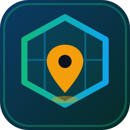
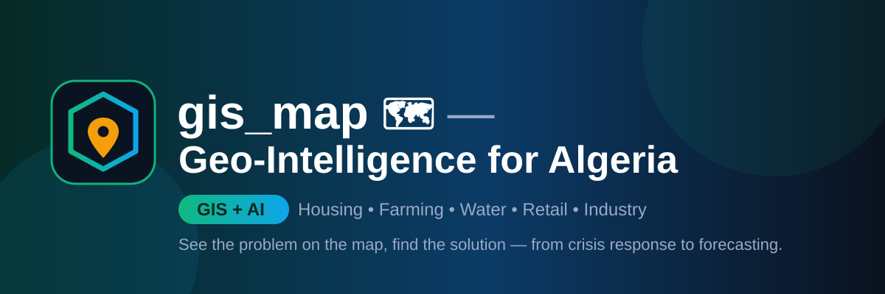

Click any wilaya circle for diagnosis & forecast 👇


CSV, Excel (.xlsx), TXT, JSON, GeoJSON, KML, zipped Shapefiles (.zip with .shp+.dbf) and SQLite databases (.db) — from file or URL. Columns auto-map to the 18 indicators — adjust, preview, then merge. Export the enriched dataset back to CSV / Excel / GeoJSON / KML.
Seven specialist agents. Pick one for its playbook — or convene the Council for a consensus decision. Works offline out of the box; add an OpenRouter key for live model calls.